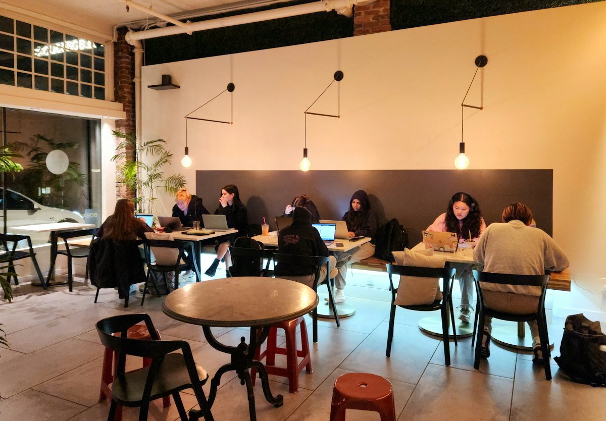
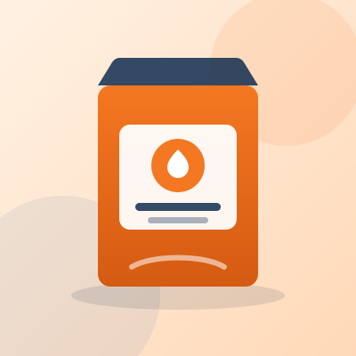
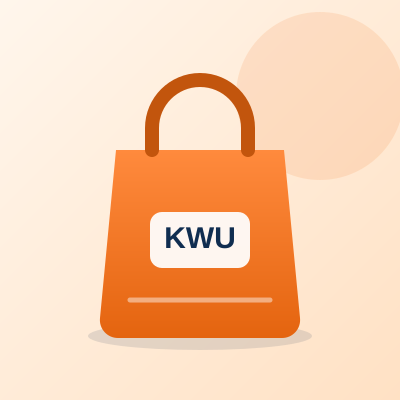

IDE BESAR. PELUANG NYATA.
KWU Campus Business Hub mempertemukan produk mahasiswa, peluang kerja sama, dan kebutuhan industri dalam satu tempat. Temukan produk, ajukan RFQ grosir, atau usulkan kolaborasimu hari ini.



Mulai dari kategori yang kamu cari
Enam kategori yang dirangkum dari jenis produk contoh yang tersedia di katalog KWU. Pilih satu untuk langsung melihat daftar produknya.
Yang paling sering dicari
Tiga jalur untuk mulai bekerja sama
Mau membeli dalam jumlah besar, membuka kemitraan, atau ingin menjalankan program? Pilih jalur yang paling sesuai dengan kebutuhanmu.
Produk terbaru
Yang terjadi di KWU
Dokumentasi kegiatan, workshop, dan program yang selama ini berjalan di lingkungan KWU. Dokumentasi pada halaman ini disusun sebagai contoh tampilan sampai materi resmi tersedia.
Agenda mendatang
Lihat semuaData masih menunggu konfirmasi
Nama kegiatan, tanggal, dan dokumentasi pada halaman ini disusun untuk demonstrasi antarmuka. Sebelum rilis, seluruh agenda dan cerita akan disesuaikan dengan catatan resmi KWU.
Jelajahi AktivitasSiap mulai? Pilih jalannya.
Belanja produk mitra, ajukan pembelian grosir, atau usulkan program kolaborasi. Semua langkah bisa dimulai dari satu halaman.